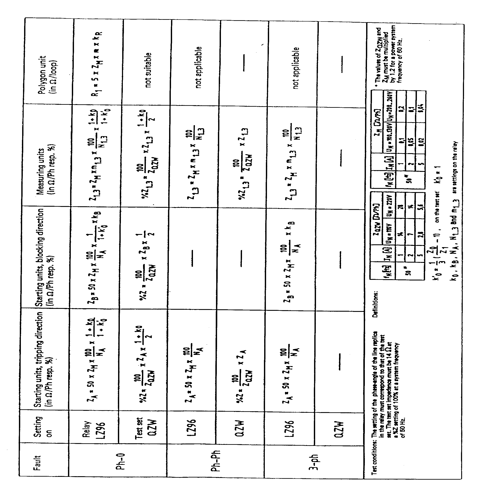
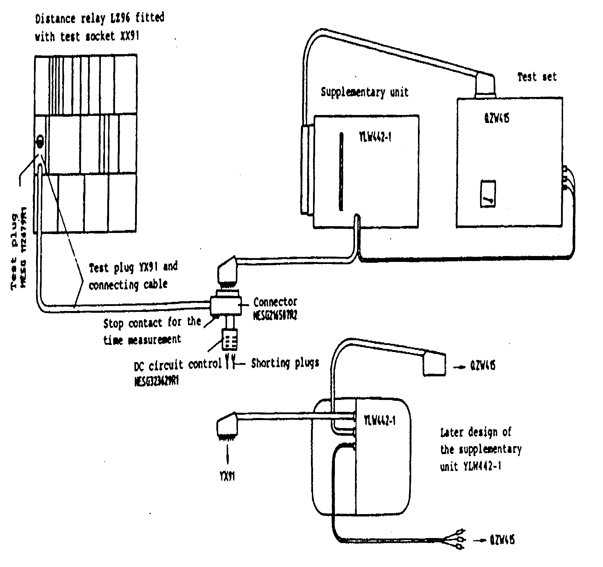
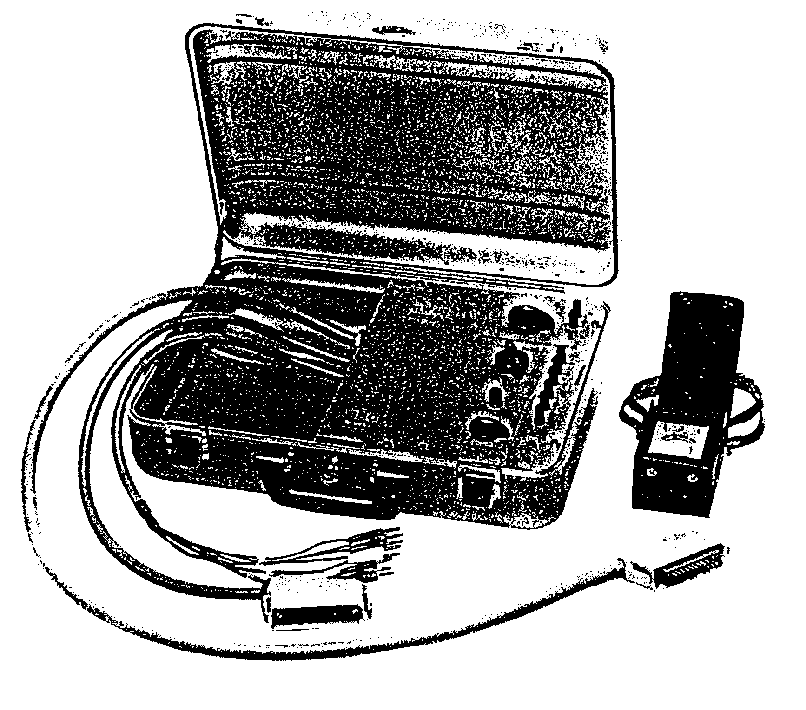
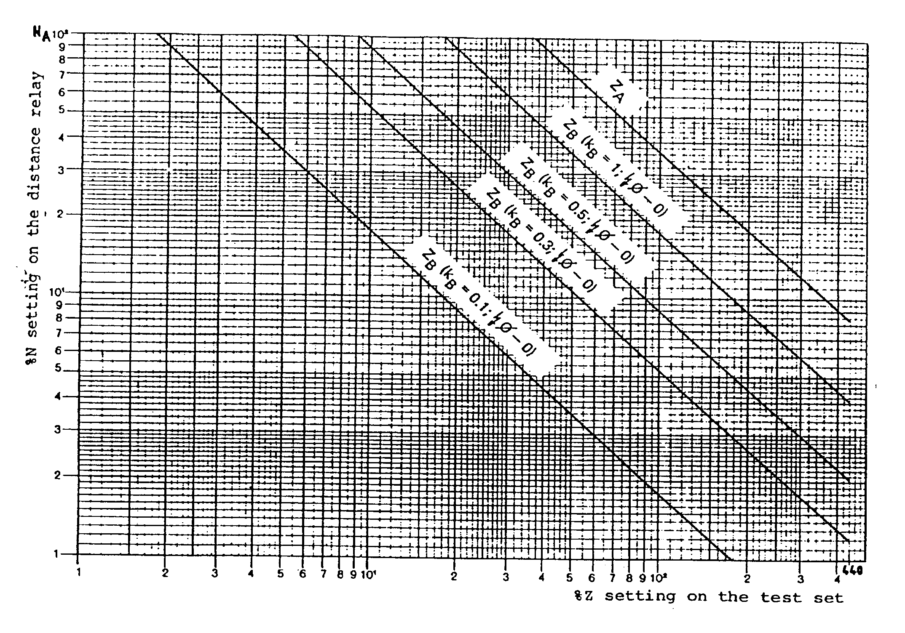
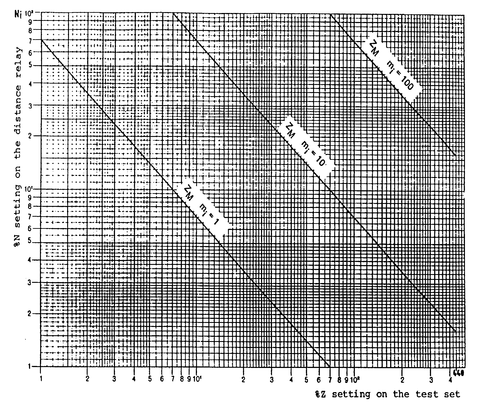
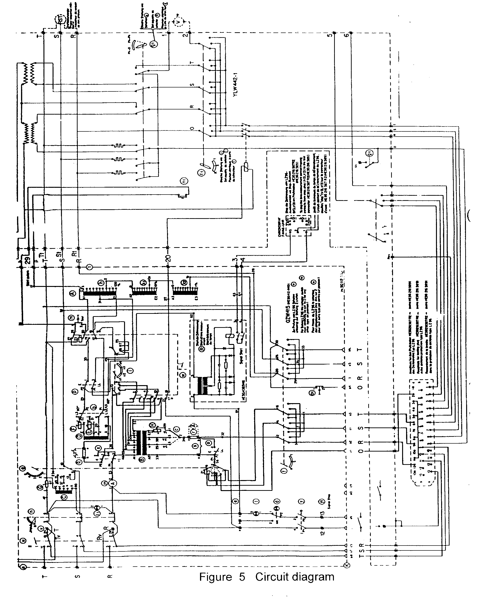
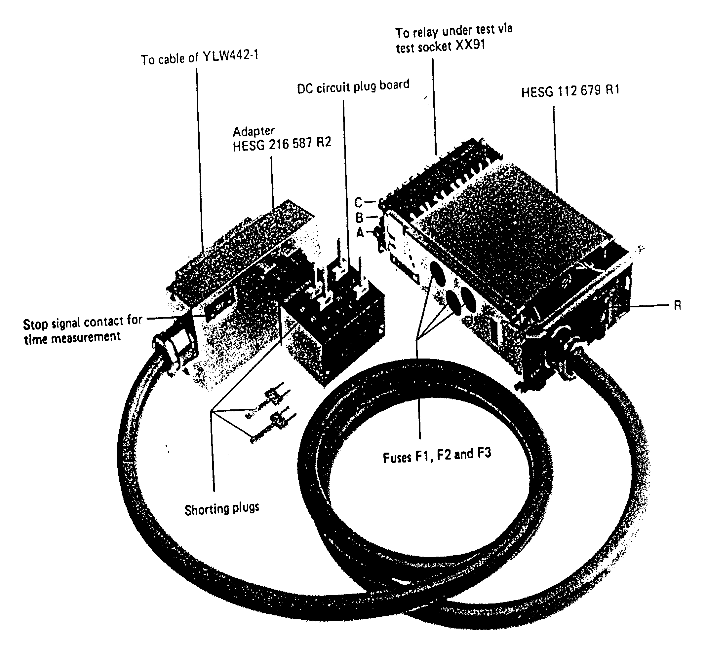
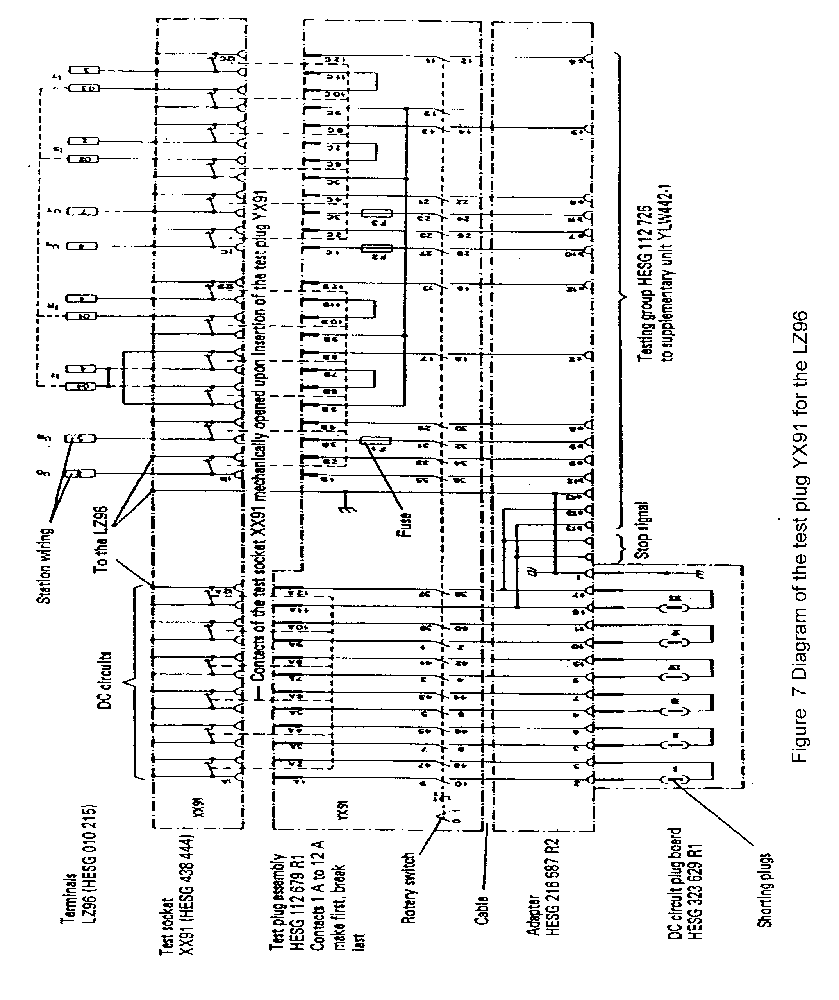
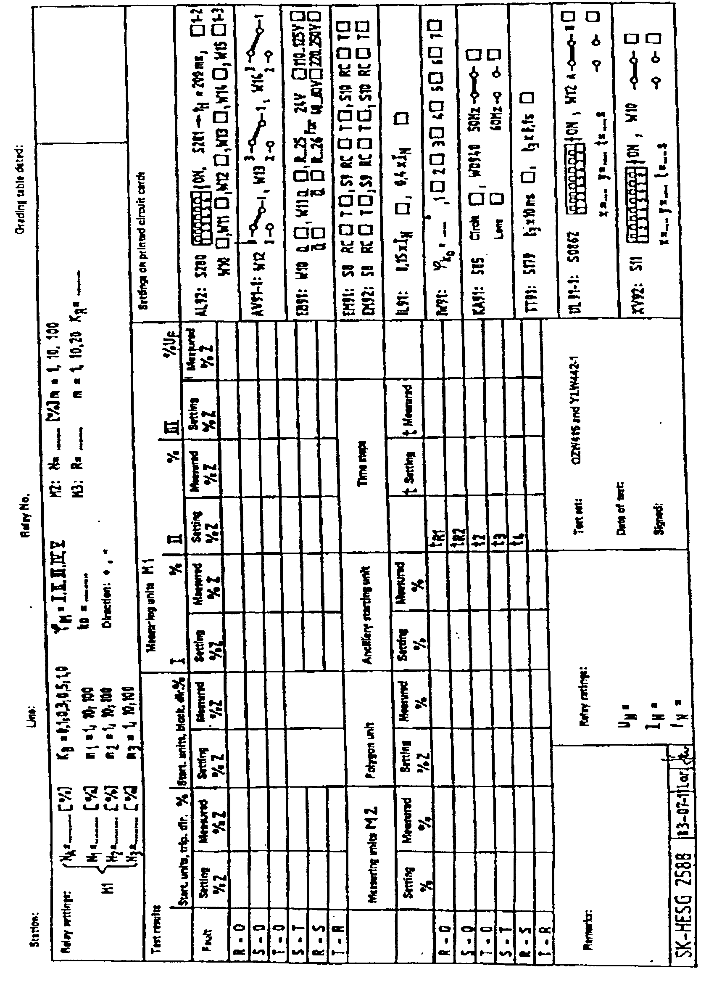

| Protection |
Distance Relay
LZ96
ABB
Issued to: Metro
Using Test Set QZW415
Date Approved:
29 Dec 1997Date to be Reviewed: Dec 2002
|
|
|
|||
| Equipment: Distance Relay LZ96 ABB |
Document No.: DsR-035-r0 | |||
|
Issued to: Metro |
||||
| Status: APPROVED | ||||
| Procedure: Using Test Set QZW415 |
Date Approved: 29 Dec 1997 |
|||
|
Date to be Reviewed: Dec 2002 |
||||
Introduction
This procedure details the steps required to completely check the proper operation and calibration of the LZ96 relay. It is recommended this procedure be carried out on a yearly bases. This work be carried out section of this document is divided into 3 sections.
The first preliminary steps to prepare for relay testing describes the activities required prior to testing. Some of these steps could be performed days before the actual test. The second section Preparation for testing describes the steps to set up the equipment for performing the actual tests. The third section is the actual test.
The document is formatted the way to minimize the possibility of error causing personal injury or damage to equipment.
Safety Precautions
A work permit must be issued, qualified maintenance staff carry the suitable safety ID category,
Safety fence with caution marks surrounding the work area is required,
Personal protective equipment must be used as safety shoes, and safety Helmet.
Ensure that the Line isolation is done.
Switch off DC power supply before inserting or withdrawing any card from the relay.
Tools and Equipment
Test set type QZW415.
Supplementary unit type YLW442.
Test plug YX91, Test socket XX91, multi-meter
Timer.
Phase sequence indicator.
Clip-on ammeter.
Work to be Carried Out
Preliminary Steps to Prepare for Relay Testing
Review technical reference material: Manufacturer’s manual.
Obtain copy of relay setting from field maintenance file.
Obtain outage for line protected by this relay.
Check that the bus and line disconnect switches are opened and tagged.
Inspect the CT secondary circuits, the VT Miniature Circuit Breakers (MCB’S), and all cabling supplying the relay.
Before inserting the test plug handle into the relay check from the station drawing that the test plug will isolate
Breaker trip coils and transfer trip scheme.
Breaker failure scheme associated with this relay.
Disturbance alarms and fault recorder associated with this relay.
Auto-reclosure associated with this relay.
If the test plug does not isolate any one of above items, you have to isolate it.
Testing the Relay, Relay Scheme, and Protection Output
Carefully follow these test procedure steps.
Verify the test results match the relay setting - If not consult technical services.
Perform checks of the acceleration of the relay, breaker failure and reclosure, separate technical procedures should be used to test to test each of these systems.
Test trip all breakers associated with the relay.
Prior to Starting Testing Procedure (s) Ensure the Following Steps
This procedure is used to perform off load relay test.
Look at the EEA panel nameplate and check that this EEA system designation nameplate agrees with the line that has been taken out of service for maintenance.
Check there is no AC current from CT’s by using a clip on ammeter.
Check there is no AC voltage from VT’s by using a voltmeter.
Preparations
Connect the test set QZW, the supplementary unit YLW and, via the test plug YX91 and test socket XX91 as shown: in figure 1.
Any shorting plugs on the plug board at the rear of the connector of the test plug cable must be removed.
In the case of the version of the supplementary unit YLW according to Fig.2, the test connector of the QZW must be connected appropriately to the right-hand side of the YLW, paying attention that the terminal numbers of both connector and YLW agree.
The connecting cables of the YLW must be plugged into the sockets on the side of the QZW in accordance with their markings. The sockets in question are:
Socket R of group (v)
Socket T
Socket R
Socket S of group (t)
Socket T
and also sockets 29b, 29p and 20.
Switch off the dc/dc converter on the relay.
Insert the test plug XX91 to the test socket A13 XX91 in the relay as shown in fig. 1.
Place the switches and links on the QZW in the initial positions as given in table1.
|
Switch |
Location on QZW |
Position |
| ( c ) | front | |
| ( u ) | front | |
| ( b ) | front | |
| ( y ),( d ) | front | |
| ( w ) | front | |
| ( f ),( g ) | front | |
| ( h ) | front | |
| ( i ) | front | |
| ( k ) | front | |
| ( n ) | front | |
| ( x ) | side | |
| ( o ),( p ) Links |
side | |
| ( q ),( r ) | side |
Table (1) Initial positions of the switches and links on the QZW
Providing the AC supply to the test set is being obtained from the main PT’s which normally supply the relay under test place switch (u) on the QZW in position I. But if testing is being carried out using a separate supply (i.e. because the corresponding line is not energized). Connect a three phase 110V a.c. (phase to phase) supply in the correct phase sequence to terminal (a) of the QZW and place switch (u) in position II. It is advisable in the latter case to insert 6 A respectively 3 A fuses in the supply.
Draw the under voltage card UL91 and diagnostic card XV92 from the relay.
Switch on the DC/DC converter.
Put the rotary switch (S1) on the front of the test socket XX91 in position (I).
Testing the Starting Unit
Forward Direction
Place the various switches in position according to table 2 for this test
|
Switches on QZW and YLW |
Position |
|
(x) (g), (g1) (f), (f1) (h), (k) (n1) |
+I (corresponding to the direction selector switch on the front of the unit IW91 1(phase-to phase fault) R(R to T fault) %Zph-ph to be operated |
Table (2) Switch positions for testing the starting units
The values to be set on the switches (h) and (k) are calculated as follows:
%Zph-ph = (100/ZQZW )x ZA x Kf (ohm/ph) Formula (1)
Where: ZA = 50 x ZM x 100/NA (ohm/ph)
ZQZW = impedance of the test set in ohm/ph. (see table 3)
ZM = replica impedance according to the rating of the LZ96 (see table 4)
NA = setting of starting units on the EA 91.
KF = correction factor for the differences between
the phase angle of the test set and replica angle set on the relay.
|
Rated Current |
ZQZW (ohm/ph) |
|
|
of test set |
Rated voltage of test set |
|
|
IN (A) |
UN=110 V |
UN=220 V |
|
1 2 5 |
14 7 2.8 |
28 14 5.6 |
Table (3) Impedance ZQZW of the test in ohm/ph at 50 HZ
|
Rated Current |
ZM (ohm/ph) |
|
|
of test set |
Rated voltage of test set |
|
|
IN (A) |
UN=100 -130V |
UN=200-260 V |
|
1 2 5 |
0.1 0.05 0.02 |
0.2 0.1 0.04 |
Table (4) Replica impedance ZM of the relay in ohm/ph at 50 HZ
Starting from the calculated value the switches (K) and (h) must be shifted up and /or down each time (n1) is released and the procedure repeated until the pick up point of the starting until in phases R and T has been found: Pick-up is indicated by the timer of the LZ96 running into higher time steps of the time-step characteristic. This test is performed in the same way for the other phases with the switches (f ) and (f1) in position (S) and (T) for earth fault place the switches (g) and (g1) in position (2) and repeat the above test with the switches (f) and (f1) in position R,S and T. In this case the value for the switches (h) and (k) are calculated as follows
% Zph-0 = (100/ ZQZW ) x ZA x (1+k0)/2 x KF ohm/ph Formula (2)
Where: K0 = Zero sequence impedance compensation set on IW91.
ZA = As Formula (1), ZQZW = As Formula (1), Kf = As Formula (1)
Reverse Direction
The starting unit for phase to phase faults does not respond to faults in the reverse direction because their measurement is directional.
Testing therefore only involves earth fault and the procedure is the same as in the direction, but the values to be checked are those of ZB and the switch (X) must be placed in the opposite position (-I) compared with the direction selector switch (« ) on the front of the unit IW91 the values of the setting %Z can be calculated as follows:
%Zph-0 = (100/ZQZW )x ZB x (1/2) Kf ohm/ph Formula (3)
Where: ZB = KB x ZA ohm/ph
KB = off-set factor set on unit EB91
ZA = As Formula (1)
ZQZW = As Formula (1)
Kf = As Formula (1)
At the conclusion of this test, return (X) to its previous position (+ I).
The %Z setting can also be obtained from the curve of Fig 3 in relation to the values of NA and KB set on the relay (starting), providing the phase angles of the relay and line correspond. The values obtained from the curve for earth faults must be multiplied by then factor 1+ko/2.
Zone Reaches
The switch positions are identical to those given in table 2 (Page 4). The settings switches (h) and (k) can be calculated as follows:
%Zph-0 = 100/ZQZW x Zi x (1+Ko)/2 x Kf ohm/ph
%Zph-ph = (100/ZQZW )x Zi x Kf ohm/ph
Where: Zi = Zm x mi 100/Ni
i = Zone index, i = 1, 2, 3.
ZQZW = As Formula (1) and in table 3
K0 = As Formula (2)
Kf = As Formula (1)
ZM = As Formula (1) and in table 4
mi = The factor of Zone ( i ) set on the unit EM92
m= 1,10,100.
Ni = % value of zone ( i ) set on the unit EM92
The %Z setting can be obtain from the curve of figure 4 in relation to the values of Ni set on the relay (measurement).
This test procedure must be repeated in this entirely for the Zones i=2 and 3, noting the %Z values at which the timing unit just does not enable the measurement of the next Zone, i.e. The timing lamp of the next Zone just does not light up.
Note: It is generally desirable to test relay with the setting actually required in operation.
Measuring the Operating Times
Starting signals for a timing instrument is available at terminals (3) and (4) of the QZW as shown in circuit diagram (Fig. 5).
The stop signal is provide by the tripping contact of LZ96 via sockets b13 and c13 of the test plug YX91 (see Figures 6 and 7).
It is only necessary to measure the operating times in one position of the switches (f) and (f1). If considered necessary, at least the first zone time can be measured in all the positions of the switches (if), (f1), (g) and (g1). For each measurement, the %Z value must be between two neighboring reach setting .
All the remaining switch positions correspond to table 2.
Tripping and Signaling Circuits Checking
The actual trip for the associated circuit breakers could be done by putting the shorting link (I) contacts 1A-2A on the test plug YX91.
For checking the signaling circuit, put shorting link (II) in contacts 3A-4A (see table 5).
|
DC Circuit shorting plug |
XX91 |
LZ96 function one c/b |
Two c/b’s |
|
I II III IV
VI |
1A-2A 3A-4A 5A-6A 7A-8A
11A-12A |
Direct trip +24 v enable signal Spare trip Direct auto-reclosure time measurement (stop) |
Direct trip No. 1 +24 v enable signal Direct trip No. 2 +24 v enable auto-reclosure / power swing blocking +24 v breaker back up control time measurement (stop) |
Table (5) Dc circuit of the LZ96 wired via the test socket XX91.
Return Relay and Associated Equipment to Service
Return relay to service by withdrawing the test plug handle from the relay.
If any equipment associated with the relay has been isolated without the test plug, , it should be returned to service by the following restoration steps:
Breaker trip coils.
Breaker failure scheme associated this relay.
Disturbance alarm and fault recorder associated with this relay.
Auto-reclosure associated with this relay.
Request Power Line be Returned to Service
Take crossed readings of all A.C currents and voltages supplied to the relay and compare them to those for normal load conditions.
Check that readings agree with station meters: (MW / MVAR / Power Factor / Amperes / Voltages).
Place a copy of the test result in the field maintenance file.

Simplified Formula for testing and setting the distance relay LZ96 with the test set QZW415 and supplementary unit YLW442-1

Figure 1 Connection between relay LZ96 and test equipment

Figure 2 Supplementary unit YLW442-1 for QZW415, Later version

- The Curves are strictly accurate when j relay = j test set.
- The values obtained from the curves must be multiplied by (1+K 0 ) /2 for earth faults
- K B is the off-set factor set on the unit EB 91
Figure 3 Calibration curves of the starting units of the distance relay LZ96, %Z setting on the test set QZW in relation to %N setting on the relay

-
The Curves are strictly accurate when j relay = j test set.- The values obtained from the curves must be multiplied by (1+K 0 ) /2 for earth faults
- m
i is the setting multiple for the zone i ( i=1, 2, 3) on the unit EM 92Figure 4 Calibration curves of the measuring units of the distance relay LZ96, %Z setting on the test set QZW in relation to %N setting on the relay


Figure 6 Test plug YX91 according to HESG 216 587 R2

Test Sheet
Record of Test Results for the Distance Relay LZ96
